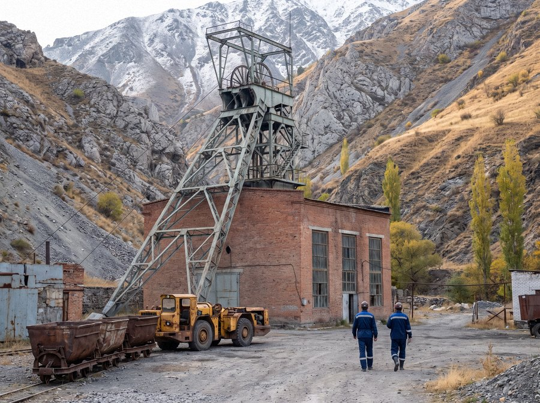
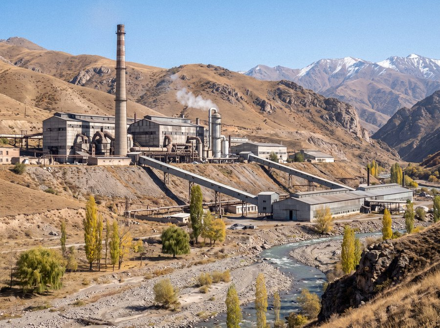
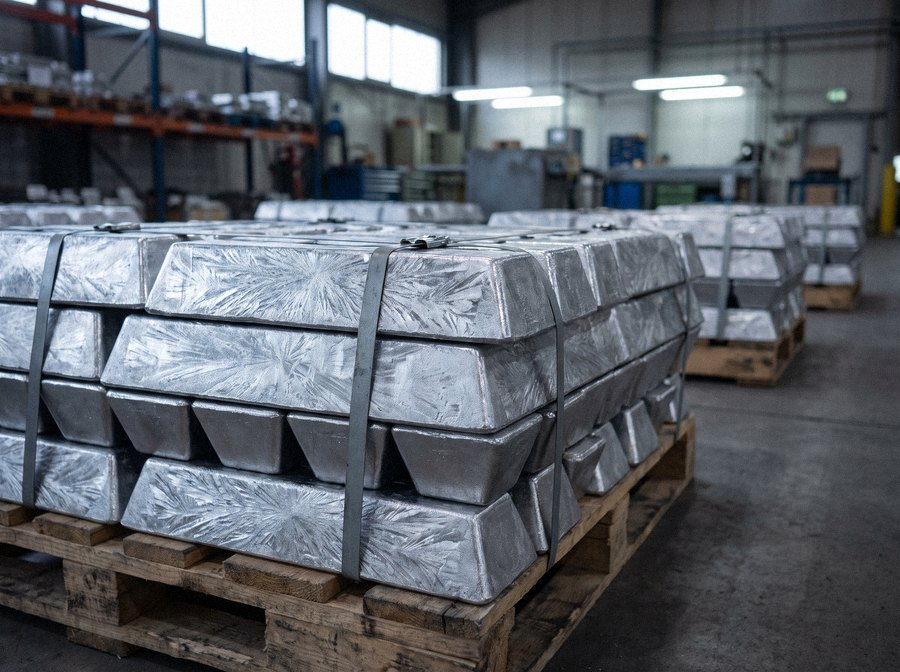

Iradi Antimony and Rare Metals Combine
Antimony from the Talas Alatau since 1961
The Combine mines stibnite ore at Sary-Bulak and produces antimony metal, antimony trioxide, concentrate and by-product bismuth and tellurium at Chatkal.
About the Combine
The Combine was formed in 1994 on the basis of the Iradi Antimony Combine, founded in 1961. Through its subsidiaries, the Sary-Bulak Antimony Works and the Chatkal Chemical Smelting Complex, it is the antimony producer of the Irad Special Economic Zone. Products are shipped by rail through Kazakhstan to customers in China, South Korea, Japan and Europe.
Our business

Sary-Bulak mine
Underground stibnite mine and flotation mill in the Sary-Bulak Gorge.
Learn more
Chatkal complex
Smelting of antimony metal and trioxide in the Urmaral gorge.
Learn more
Products
Antimony metal 99.65% Sb, antimony trioxide, concentrate, bismuth and tellurium.
Learn moreInvestment project
Sary-Bulak Deep Levels Restart
The project will extend the life of the Sary-Bulak mine and raise ore output by deepening the Central incline and reopening worked-out levels.
About the projectNews
All newsStatement on the Sary-Bulak Deep Levels Restart
Negotiations with two partner companies are continuing. The partners will be named at signing.
Production report for the third quarter of 2026
The Combine mined 3,950 tonnes of contained antimony in the third quarter.